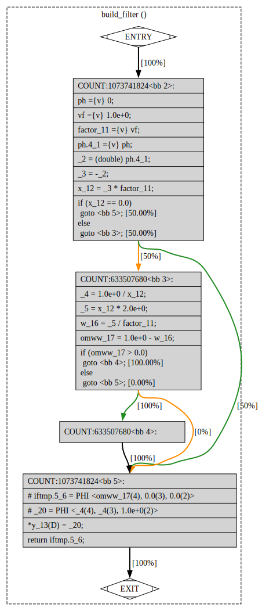
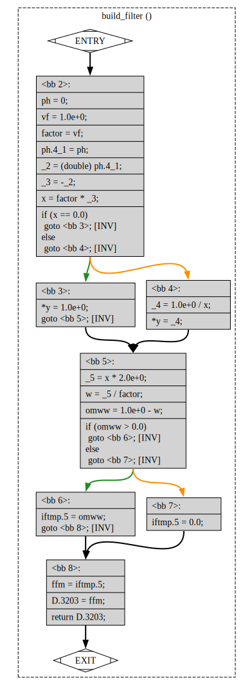

A dataflow gcc bug
Let’s look at a simpler gcc bug today:
PR107879. There ffmpeg-4 started
failing it’s testsuite on gcc-13 from this week’s master:
$ ./tests/fate-run.sh fate-swr-resample-s16p-2626-8000 "" "" \
"ffmpeg" 'ffmpeg -i tests/data/asynth-2626-1.wav \
-af atrim=end_sample=10240,\
aresample=8000:internal_sample_fmt=s16p:exact_rational=0:linear_interp=0,\
aformat=s16p,\
aresample=2626:internal_sample_fmt=s16p:exact_rational=0:linear_interp=0 \
-f wav -c:a pcm_s16le -' 'stddev' 'tests/data/asynth-2626-1.wav' '0.1' '1' '' '' '' '1393.36' '31512 - 20482' 's16' '' '' '' ''
...
FAIL fate-swr-resample-s16p-2626-8000On ffmpeg structure
While the prospect of debugging multimedia package might sound scary
ffmpeg is a lot simpler to explore than other complex projects like
llvm or gcc.
ffmpeg can be viewed as a simple buffer-in / buffer-out stream codec
(just like zlib or zstd). It’s hard to come up with a new clever
algorithm. But debugging already written one is usually straightforward.
Individual bytes when they get from input to output are either copied as is or get slightly transformed without too much state to be collected along the way. The code is written to be not too slow which means there are not many high level abstractions or deep memory indirections.
Then if it’s all so somple what could possible go wrong there then? Is
there even a place for gcc to find a crack to fall in? Let’s find out.
The only caveat is that for most algorithms use floating points all over the place. That might make computations not bit-for-bit reproducible even on different optimization levels.
The change in behaviour we see might not be the bug at all.
Extracting minimized example
The above $ ./tests/fate-run.sh fate-swr-resample-s16p-2626-8000 ...
command was failing consistently when built with gcc-master and was
succeeding when built with gcc-12. With help of
#pragma GCC optimize(0) I nailed the misclmpilation down to
libswresample/resample.c
file. build_filter() function produced different filters for good and
bad cases.
Once I extracted test inputs for build_filter() I managed to craft the
following self-contained example that exhibits the problem:
#include <stdio.h>
__attribute__((noinline, noipa))
static double build_filter(double * y) {
volatile int ph = 0;
volatile double vf = 1.0;
double factor = vf;
double x = - (double)ph * factor; /* should be -0.0 */
fprintf(stderr, "z = %f\n", x); /* prints -0.0, ok */
/* This 'if / else' code should not affect calculation of 'ffm', but
removing it does change things. */
if (x == 0) *y = 1.0; /* should be 1.0 or .. */
else *y = 1.0 / x; /* -inf? */
fprintf(stderr, "*y = %f\n", *y); /* printf 1.0, ok */
double w = 2.0 * x / factor; /* should be -0.0 */
fprintf(stderr, "w = %f\n", w); /* prints -0.0, ok */
double omww = 1 - w; /* should be 1.0 */
fprintf(stderr, "omww = %f\n", omww); /* printf 1.0, ok */
double ffm = (omww > 0.0) ? omww : 0.0; /* should be 1.0 */
fprintf(stderr, "ffm = %f\n", ffm); /* printf 0.0 or 1.0, BUG */
return ffm;
}
int main()
{
double y = 42.0;
double filter = build_filter(&y);
fprintf(stderr, "f = %.20f; y = %.20f\n", filter, y);
/* Should be 1.0, sometimes returns 0.0. */
fprintf(stderr, "%s\n", (filter > 0.5) ? "OK" : "BUG");
}It’s a bit long but very straightforward: no loops, just one condition.
Here is the output difference in -O0 / -O1 comparison on
gcc-master:
# -O0, good:
$ gcc-HEAD/bin/gcc -O0 -lm a.c -o a -mfpmath=sse -fexcess-precision=standard -Wall -Wextra && ./a
z = -0.000000
*y = 1.000000
w = -0.000000
omww = 1.000000
ffm = 1.000000
f = 1.00000000000000000000; y = 1.00000000000000000000
OK
# -O1, bad:
$ gcc-HEAD/bin/gcc -O1 -lm a.c -o a -mfpmath=sse -fexcess-precision=standard -Wall -Wextra && ./a
z = -0.000000
*y = 1.000000
w = -0.000000
omww = 1.000000
ffm = 0.000000
f = 0.00000000000000000000; y = 1.00000000000000000000
BUGNote how -O0 case computes correct f = 1.0 and -O1 computes
incorrect f = 0.0. There are no denormalized values. Just 0.0,
1.0 and 2.0. All of them are representable perfectly in 32-bit
float or 64 double types. Thus the result should not be affected
by finer optimizations like fused-multiply-add which might observably
increase precision.
Let’s strip all the printf() calls off build_filter() to ease
inspection of gcc optimization process:
#include <stdio.h>
__attribute__((noinline, noipa))
static double build_filter(double * y) {
volatile int ph = 0;
volatile double vf = 1.0;
double factor = vf;
double x = - (double)ph * factor; /* should be -0.0 */
/* This 'if / else' code should not affect calculation of 'ffm', but
removing it does change things. */
if (x == 0) *y = 1.0; /* should be 1.0 or .. */
else *y = 1.0 / x; /* -inf? */
double w = 2.0 * x / factor; /* should be -0.0 */
double omww = 1 - w; /* should be 1.0 */
double ffm = (omww > 0.0) ? omww : 0.0; /* should be 1.0 */
return ffm;
}
int main()
{
double y = 42.0;
double filter = build_filter(&y);
fprintf(stderr, "f = %.1f; y = %.1f\n", filter, y);
/* Should be 1.0, sometimes returns 0.0. */
fprintf(stderr, "%s\n", (filter > 0.5) ? "OK" : "BUG");
}The bug is still here:
# -O0, good:
$ gcc-HEAD/bin/gcc -O0 -lm b.c -o b && ./b
f = 1.0; y = 1.0
OK
# -O1, bad:
$ gcc-HEAD/bin/gcc -O1 -lm b.c -o b && ./b
f = 0.0; y = 1.0
BUGI had to use a bit fo volatile to prevent gcc from folding constants
early and eliminate the the bug condition.
Fun fact: this test case still fails on gcc-master while original
ffmpef-4 test suite does not. Looks like some unrelated detail of
gcc changed to partially mask the bug. If I was not quick enough
to extract the reproducer it might take a bit more time to restore
the envieonment and get it.
Diving into iptimization process
As usual -fdump-tree-all is our friend to find out when suspicios
pass broke our program.
gcc-HEAD/bin/gcc -O1 -lm b.c -o b -fdump-tree-optimized-slim shows the
following final state in b.c.254t.optimized:
__attribute__((noipa, noinline, noclone, no_icf))
double build_filter (double * y)
{
double omww;
double w;
double x;
double factor;
volatile double vf;
volatile int ph;
int ph.4_1;
double _2;
double _3;
double _4;
double _5;
double iftmp.5_6;
double _20;
<bb 2> [local count: 1073741824]:
ph ={v} 0;
vf ={v} 1.0e+0;
factor_11 ={v} vf;
ph.4_1 ={v} ph;
_2 = (double) ph.4_1;
_3 = -_2;
x_12 = _3 * factor_11;
if (x_12 == 0.0)
goto <bb 5>; [50.00%]
else
goto <bb 3>; [50.00%]
<bb 3> [local count: 633507680]:
_4 = 1.0e+0 / x_12;
_5 = x_12 * 2.0e+0;
w_16 = _5 / factor_11;
omww_17 = 1.0e+0 - w_16;
if (omww_17 > 0.0)
goto <bb 4>; [100.00%]
else
goto <bb 5>; [0.00%]
<bb 4> [local count: 633507680]:
<bb 5> [local count: 1073741824]:
# iftmp.5_6 = PHI <omww_17(4), 0.0(3), 0.0(2)>
# _20 = PHI <_4(4), _4(3), 1.0e+0(2)>
*y_13(D) = _20;
return iftmp.5_6;
}Can you spot the bug? It might be a bit hard to read. I can’t easily
follow it due to many branch conditions. I could vaguely see that this
example is incorrect, but tracing the dumps through each of ~100 gcc
passes would be too slow. I asked gcc to dump graphviz style outputs
with -fdump-tree-optimized-graph. b.c.254t.optimized.dot generates
the following picture:

Arc legend here is the following:
- green color is
TRUEcase of branch inifcondition. - orange color is
FALSEcase of branch inifcondition.
I find graphical output to be slightly easier to follow: our
x_12 == 0.0 is supposed to be TRUE. Fun fact: -0.0 is equal to
0.0 according to C and IEEE-754 rules.
This means that none of bb3 or bb4 are executed and
iftmp.5_6 PHI node brings in 0.0 value from bb2:
<bb 5> [local count: 1073741824]:
# iftmp.5_6 = PHI <omww_17(4), 0.0(3), 0.0(2)>
...
*y_13(D) = _20;
return iftmp.5_6;I went through the graphs of all tree passes dumped with
gcc-HEAD/bin/gcc -O1 -lm b.c -o b -fdump-tree-all-graph to find the
seemingly problematic graph.
Here is our b.c.015t.cfg.dot original unoptimized graph as a reference:

Let’s trace it through to make sure it’s correct. It wil also help getting used to variable names and expected basic block effects:
- in
bb2(entrance):ph.4_1 = ph = 0;factor = vf = 1.0;_2 = ph.4_1; /* 0.0 */_3 = -_2; /* -0.0 */x = factor * _3; /* -0.0 */if (x == 0.0) goto bb3;
- in
bb3(branch taken):*y = 1.0;(not interesting)goto bb5;
- in
bb5:_5 = x * 2.0; /* -0.0 */w = _5 / factor; /* -0.0 */omw = 1.0 - w; /* 1.0 */if (omww > 0.0) goto bb6;
- in
bb6: (return)iftmp.5 = omww; /* 1.0 */goto bb8;
- in
bb8:ffm = iftmp.5; /* 1.0 */D.3203 = ffm; /* 1.0 */return D.3203; /* 1.0 */
It’s a bit verbose but very straightforward. The effect is:
wgets calculated to0.0omwwandffmget calculated to1.0and return the value
If we look further down the optimization passes I think the
b.c.128t.sra is last valid step:

And b.c.130t.dom2 is first problematic step:
Note how omww_22 = 1.0 - w_21; in bb6 is never read. Instead our
PHI node # iftmp.5_6 = PHI <omww_17(3), 0.0(4), 0.0(6)> claims
that bb6 always brings in 0.0 value in 0.0(6) alternative.
Why does it happen? At this point I gave up and filed https://gcc.gnu.org/PR107879 bug.
Then I bisected gcc down to commit d4c2f1d3:
commit d4c2f1d376da6fc3f3c30a9d3160e43c95399343
Date: Sat Nov 12 09:39:00 2022 +0100
range-op: Implement op[12]_range operators for {PLUS,MINUS,MULT,RDIV}_EXPRThe commit changed value ranges inferred for variables to simplify the
call graph by eliminating impossible edges. Alexander confirmed that
dom2/dom3 passes take part in destroying original program and Jakub
nailed it down to incorrect inferred ranges around the division.
I would like to get a bit better understanding at how and when ranges get computed for this example. So far I don’t know how to look at them in detail.
Parting words
ffmpegwhile being simple and full of assembly still can step ongccbugs in more obscure areas.ffmpeguses cubic formula to upsample inputs.-0.0is equal to0.0according to IEEE754 even if binary encodings differ.gcc’s dataflow related to value ranges is a bit hard to follow even in-fdump-*outputs.gcc’s-fdump-*-graphset of options dump nice.dot-style outputs for visual debugging.volatileis great at inhibiting complex constant propagation optimizations.
Have fun!